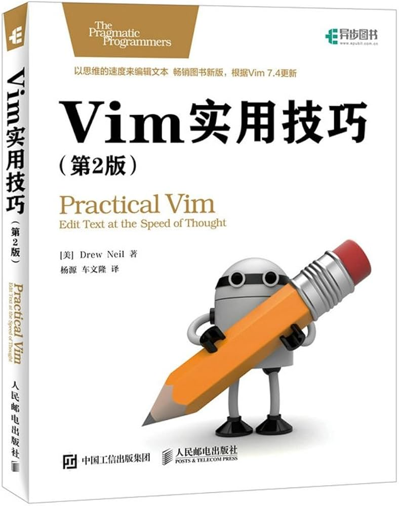

|  |
Vim 实用技巧（第2版）
[美] Drew Neil 著|杨源 车文隆 译
|
第1章 Vim解决问题的方式
技巧1 结识 . 命令
Vim文档只是简单地提到 . 命令会“重复上次修改”（参见 :h .），这听起来没什么特别，但在这个简单的说明里，我们会发现让Vim区分模式的编辑模型如此高效的核心原因。首先我们要问：“究竟什么是修改？”
要理解 . 命令的强大，我们需要意识到这一点：“上次修改”可以指很多东西，一次修改的单位可以是字符、整行，甚至是整个文件。
x 命令会删除光标下的字符，在这种情况下使用 . 命令“重复上次修改”时，就会让Vim删除光标下的字符
dd 命令也做删除操作，但它会把整行一起删掉。如果在dd后使用 . 命令，那么“重复上次修改”会让Vim删除当前行
最后，>G 命令会增加从当前行到文档末尾处的缩进层级。如果我们在此命令后使用 . 命令，那么“重复上次修改”会让Vim增加从当前行到文档末尾的缩进层级。
x、dd 以及 > 命令都是在普通模式中执行的命令，不过，每次我们进入插入模式时，也会形成一次修改。从进入插入模式的那一刻起（例如，输入 i），直到返回普通模式时为止（输入<Esc>），Vim会记录每一个按键操作。做出这样一个修改后再用 . 命令的话，它将会重新执行所有这些按键操作（参见技巧8中的“在插入模式中移动光标会重置修改状态”部分中的补充说明）。
.命令是一个微型的宏
技巧2 不要自我重复
| 复合命令 |
等效的长命令 |
| C |
c$ |
| s |
cl |
| S |
^c |
| I |
^i |
| A |
$a |
| o |
A<CR> |
| O |
ko |
你找出这些命令别的共同点了吗？它们全都会从普通模式切换到插入模式。仔细想想这一点，并想想这对 . 命令可能产生怎样的影响。
技巧3 以退为进
技巧4 执行、重复、回退
技巧5 查找并手动替换
技巧6 结识.范式
第一部分 模式
第2章 普通模式
技巧7 停顿时请移开画笔
技巧8 把撤销单元切成块
技巧9 构造可重复的修改
技巧10 用次数做简单的算术运算
技巧11 能够重复，就别用次数
技巧12 双剑合璧，天下无敌
第3章 插入模式
技巧13 在插入模式中可即时更正错误
技巧14 返回普通模式
技巧15 不离开插入模式，粘贴寄存器中的文本
技巧16 随时随地做运算
技巧17 用字符编码插入非常用字符
技巧18 用二合字母插入非常用字符
技巧19 用替换模式替换已有文本
第4章 可视模式
技巧20 深入理解可视模式
技巧21 选择高亮选区
技巧22 重复执行面向行的可视命令
技巧23 只要可能，最好用操作符命令，而不是可视命令
技巧24 用面向列块的可视模式编辑表格数据
技巧25 修改列文本
技巧26 在长短不一的高亮块后添加文本
第5章 命令行模式
技巧27 结识Vim的命令行模式
技巧28 在一行或多个连续行上执行命令
技巧29 使用‘:t’和‘:m’命令复制和移动行
技巧30 在指定范围上执行普通模式命令
技巧31 重复上次的 Ex 命令
技巧32 自动补全 Ex 命令
技巧33 把当前单词插入到命令行
技巧34 回溯历史命令
技巧35 运行Shell命令
第二部分 文件
第6章 管理多个文件
技巧36 用缓冲区列表管理打开的文件
技巧37 用参数列表将缓冲区分组
技巧38 管理隐藏缓冲区
技巧39 将工作区切分成窗口
技巧40 用标签页将窗口分组
第7章 打开及保存文件
技巧41 用:edit命令打开文件
技巧42 使用:find打开文件
技巧43 使用netrw 管理文件系统
技巧44 把文件保存到不存在的目录中
技巧45 以超级用户权限保存文件
第三部分 更快地移动及跳转
第8章 用动作命令在文档中移动
技巧46 让手指保持在本位行上
技巧47 区分实际行与屏幕行
技巧48 基于单词移动
技巧49 对字符进行查找
技巧50 通过查找进行移动
技巧51 用精确的文本对象选择选区
技巧52 删除周边，修改内部
技巧53 设置位置标记，以便快速跳回
技巧54 在匹配括号间跳转
第9章 在文件间跳转
技巧55 遍历跳转列表
技巧56 遍历改变列表
技巧57 跳转到光标下的文件
技巧58 用全局位置标记在文件间快速跳转
第四部分 寄存器
第10章 复制与粘贴
技巧59 用无名寄存器实现删除、复制与粘贴操作
技巧60 深入理解Vim寄存器
技巧61 用寄存器中的内容替换高亮选区的文本
技巧62 把寄存器的内容粘贴出来
技巧63 与系统剪贴板进行交互
第11章 宏
技巧64 宏的读取与执行
技巧65 规范光标位置、直达目标以及中止宏
技巧66 加次数回放宏
技巧67 在连续的文本行上重复修改
技巧68 给宏追加命令
技巧69 在一组文件中执行宏
技巧70 用迭代求值的方式给列表编号
技巧71 编辑宏的内容
第五部分 模式
第12章 按模式匹配及按原义匹配
技巧72 调整查找模式的大小写敏感性
技巧73 按正则表达式查找时，使用 \v模式开关
技巧74 按原义查找文本时，使用 \V原义开关
技巧75 使用圆括号捕获子匹配
技巧76 界定单词的边界
技巧77 界定匹配的边界
技巧78 转义问题字符
第13章 查找
技巧79 结识查找命令
技巧80 高亮查找匹配
技巧81 在执行查找前预览第一处匹配
技巧82 统计当前模式的匹配个数
技巧83 将光标偏移到查找匹配的结尾
技巧84 对完整的查找匹配进行操作
技巧85 利用查找历史，迭代完成复杂的模式
技巧86 查找当前高亮选区中的文本
第14章 替换
技巧87 结识substitute命令
技巧88 在文件范围内查找并替换每一处匹配
技巧89 手动控制每一次替换操作
技巧90 重用上次的查找模式
技巧91 用寄存器的内容替换
技巧92 重复上一次substitute命令
技巧93 使用子匹配重排CSV文件的字段
技巧94 在替换过程中执行算术运算
技巧95 交换两个或更多的单词
技巧96 在多个文件中执行查找与替换
第15章 global命令
技巧97 结识global命令
技巧98 删除所有包含模式的文本行
技巧99 将TODO项收集至寄存器
技巧100 将CSS文件中所有规则的属性按照字母排序
第六部分 工具
技巧103 使用Vim的标签跳转命令，浏览关键字的定义
第17章 编译代码，并通过Quickfix列表浏览错误信息
技巧104 不用离开Vim也能编译代码
技巧105 浏览Quickfix列表
技巧106 回溯以前的Quickfix列表
技巧107 定制外部编译器
第18章 通过grep、vimgrep以及其他工具对整个工程进行查找
技巧108 不必离开Vim也能调用grep
技巧109 定制grep程序
技巧110 使用Vim内部的Grep
第19章 自动补全
技巧111 结识Vim的关键字自动补全
技巧112 与自动补全的弹出式菜单进行交互
技巧113 掌握关键字的来龙去脉
技巧114 使用字典中的单词进行自动补全
技巧115 自动补全整行文本
技巧116 自动补全文件名
技巧117 根据上下文自动补全
第20章 利用Vim的拼写检查器，查找并更正拼写错误
技巧118 对你的工作进行拼写检查
技巧119 使用其他拼写字典
技巧120 将单词添加到拼写文件中
技巧121 在插入模式下更正拼写错误
第21章 接下来干什么
21.1 继续练习
21.2 定制你自己的Vim
21.3 欲善其事，先利其器
附录A 根据个人喜好定制Vim
A.1 动态改变Vim的设置项
A.2 将配置信息存至vimrc文件
A.3 为特定类型的文件应用个性化设置